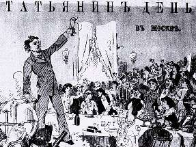

Борис Акунин
Мой календарь
Это личное. И дело не в Татьяне, хотя мне посчастливилось знать несколько выдающихся носительниц этого имени, а в том, что 25 января - день основания моей Alma Mater, Московского университета.
25 января вышел указ кроткия Елисавет. В ту эпоху существовала довольно трогательная традиция при объявлении всякого новшества разъяснять подданным почему оно вводится. Например, неведомая, труднопроизносимая диковина «уни-вер-си-тет» - зачем он нужен? «Как всякое добро происходит от просвещенного разума, а напротив того всякое зло искореняется, то следовательно нужда необходимая о том стараться» - вот зачем.
Спасибо всем университетам за просвещение разума и искоренение зла. Легкой учебы всем студентам.
А еще, раз уж это день святой Татьяны, чудесного избавлениям вам от лютых напастей. Потому что римлянку Татиану бросили в яму к голодному льву, но зверь ее не тронул, а лег к ее ногам.
Всё будет хорошо. Не пугайся и не плачь. Не утонет в речке мяч.